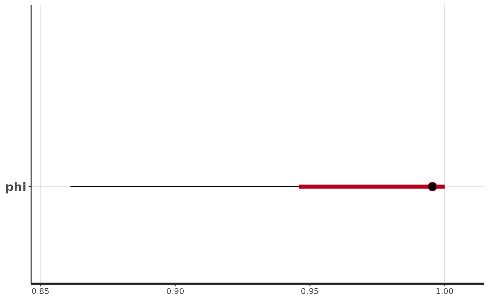

Bridge to R-INLA and Stan
Created: 2023-12-13. Last modified: 2023-12-14.
Source:vignettes/INLA_and_Stan_utilities.Rmd
INLA_and_Stan_utilities.RmdUsing univariate WCP prior in R-INLA
Our package allows user to provide WCP prior with a form that R-INLA software can use. Here we give an example with WCP\(_2\) prior for \(\phi\) of stationary AR(1) processes. The model setup and theoretical details can be found at Section 3.1 from https://arxiv.org/pdf/2312.04481.pdf. We will generate the WCP\(_2\) prior by its analytic expression. Functions that encode analytic expression of WCP priors in our package have similar usage. For univariate prior, functions take a sequence of values of parameter of interests and for bivariate priors, functions take one pair of values of the two parameters. If users set the argument ‘inla_table’ to be TRUE, then the function will output the prior in the format that R-INLA can use.
We now load the R-INLA and WCPprior library.
We first simulate a stationary AR(1) process with length 10. We set the standard deviation \(\sigma = 0.1\) and \(\phi = 0.2\).
# length of the AR1 process
n = 10
# standard deviation of the process
sigma = 0.1
# value of phi
phi = 0.2
# simulate the process
sim_data = numeric(n)
sim_data[1] = rnorm(1,mean = 0, sd = sigma)
for (i in 2:n){
sim_data[i] = phi*sim_data[i-1] + rnorm(1, mean = 0, sd = sigma*sqrt(1-phi^2) )
}
data = data.frame(y = sim_data, t = 1:n)Now we are ready to setup the WCP\(_2\) prior of \(\phi\) by using the function ‘WCP2_1D_AR1_analytic’ from WCPprior package. User should input a sequence of values of \(\phi \in [-1,1]\) with information of \(n\), \(\sigma\) and \(\eta\).
# create a sequence of values of phi
seq_phi = seq(from = -1, to = 0.999, by = 0.001)
# call the function and set inla_table = TRUE so that the function will return a prior that can be used by INLA
WCP2_prior_table = WCP2_1D_AR1_analytic (seq_phi = seq_phi,
eta = 15,
n = 10,
sigma = sigma,
inla_table = TRUE)By setting ‘inla_table = TRUE’, the output of this function can be directly used by INLA for specifying prior in its formula.
formula = y~ -1+f(t,model='ar1',hyper = WCP2_prior_table)Then, we are ready to fit the model with the simulated process and WCP prior by INLA.
result = inla(formula=formula, data = data, family="Gaussian",
control.predictor = list(compute=T))
summary(result)##
## Call:
## c("inla.core(formula = formula, family = family, contrasts = contrasts,
## ", " data = data, quantiles = quantiles, E = E, offset = offset, ", "
## scale = scale, weights = weights, Ntrials = Ntrials, strata = strata,
## ", " lp.scale = lp.scale, link.covariates = link.covariates, verbose =
## verbose, ", " lincomb = lincomb, selection = selection, control.compute
## = control.compute, ", " control.predictor = control.predictor,
## control.family = control.family, ", " control.inla = control.inla,
## control.fixed = control.fixed, ", " control.mode = control.mode,
## control.expert = control.expert, ", " control.hazard = control.hazard,
## control.lincomb = control.lincomb, ", " control.update =
## control.update, control.lp.scale = control.lp.scale, ", "
## control.pardiso = control.pardiso, only.hyperparam = only.hyperparam,
## ", " inla.call = inla.call, inla.arg = inla.arg, num.threads =
## num.threads, ", " keep = keep, working.directory = working.directory,
## silent = silent, ", " inla.mode = inla.mode, safe = FALSE, debug =
## debug, .parent.frame = .parent.frame)" )
## Time used:
## Pre = 0.261, Running = 0.298, Post = 0.0208, Total = 0.58
## Random effects:
## Name Model
## t AR1 model
##
## Model hyperparameters:
## mean sd 0.025quant 0.5quant
## Precision for the Gaussian observations 2.17e+04 2.40e+04 1385.454 1.41e+04
## Precision for t 1.71e+02 7.89e+01 58.589 1.57e+02
## Rho for t 5.21e-01 1.96e-01 0.089 5.42e-01
## 0.975quant mode
## Precision for the Gaussian observations 8.54e+04 3747.479
## Precision for t 3.62e+02 130.538
## Rho for t 8.42e-01 0.589
##
## Marginal log-Likelihood: 5.41
## is computed
## Posterior summaries for the linear predictor and the fitted values are computed
## (Posterior marginals needs also 'control.compute=list(return.marginals.predictor=TRUE)')Finally, we visualize the result.
Using univariate WCP prior in stan
WCPprior package also provides format of WCP priors that can be used
by stan. The implemented priors are: (1), WCP\(_2\) prior for \(\phi\) of stationary AR(1) process.
(WCP2_1D_AR1_analytic)
(2), WCP\(_1\) prior for \(\xi\), the tail index, of generalized
Pareto distribution. (WCP1_1D_GPtail_analytic)
(3), WCP\(_2\) prior for precision
parameter (reciprocal of variance) of Gaussian distribution.
(WCP2_1D_Gaussian_precision_analytic)
(4), WCP\(_2\) prior for mean parameter
of Gaussian distribution. (WCP2_1D_Gaussian_mean_analytic)
(5), Bivariate WCP\(_2\) prior for mean
and standard deviation parameter of Gaussian distribution.
(WCP2_2D_Gaussian_analytic)
(6), Bivariate WCP\(_1\) prior for
\(\sigma\) and \(\xi\) of generalized Pareto distribution.
(WCP1_2D_GP_analytic)
Here we show an example of using ‘WCP2_1D_AR1_analytic’ function in stan.
The first block in the stan file should be a function block that includes the implemented functions from WCPprior package.
functions {
#include /include/WCP_analytic.stan
}The second block specifies data. That is an AR(1) process, y, with length \(N\).
data {
int<lower=0> N;
vector[N] y;
}The third block specifies parameter of interests, which is \(\phi\) and its range is \([-1,1]\)
parameters {
real<lower = -1, upper = 1> phi;
}The last block specifies model setup including log-likelihood of the process and log-likehood of the WCP prior. Here, the first argument of the function ‘WCP2_1D_AR1_analytic’ is length of the process, the second one is value of \(\eta\) and the last one is value of \(\sigma\) (standard deviation of the process).
model {
for (n in 2:N)
y[n] ~ normal(phi * y[n-1], 0.1);
phi ~ WCP2_1D_AR1_analytic(N, 2.172101, 0.1);
}Let us now create the stan file and build the model:
functions {
#include ../inst/stan/include/WCP_analytic.stan
}
data {
int<lower=0> N;
vector[N] y;
}
parameters {
real<lower = -1, upper = 1> phi;
}
model {
for (n in 2:N){
y[n] ~ normal(phi * y[n-1], 0.1);
}
phi ~ WCP2_1D_AR1_analytic(N, 2.172101, 0.1);
}Let us sample an AR1 process, where n is the length of
the process:
n = 100
sigma = 0.1
phi = 0.8
sim_data = numeric(n)
sim_data[1] = rnorm(1,mean = 0, sd = sigma)
for (i in 2:n){
sim_data[i] = phi*sim_data[i-1] + rnorm(1, mean = 0, sd = sigma*sqrt(1-phi^2) )
}
data <- list(N = 100L,
y = sim_data)We will now fit the model in stan. Observe that we are
calling the sampling function as we have the model as an
R object.
##
## SAMPLING FOR MODEL 'anon_model' NOW (CHAIN 1).
## Chain 1:
## Chain 1: Gradient evaluation took 2.1e-05 seconds
## Chain 1: 1000 transitions using 10 leapfrog steps per transition would take 0.21 seconds.
## Chain 1: Adjust your expectations accordingly!
## Chain 1:
## Chain 1:
## Chain 1: Iteration: 1 / 1000 [ 0%] (Warmup)
## Chain 1: Iteration: 100 / 1000 [ 10%] (Warmup)
## Chain 1: Iteration: 200 / 1000 [ 20%] (Warmup)
## Chain 1: Iteration: 300 / 1000 [ 30%] (Warmup)
## Chain 1: Iteration: 400 / 1000 [ 40%] (Warmup)
## Chain 1: Iteration: 500 / 1000 [ 50%] (Warmup)
## Chain 1: Iteration: 501 / 1000 [ 50%] (Sampling)
## Chain 1: Iteration: 600 / 1000 [ 60%] (Sampling)
## Chain 1: Iteration: 700 / 1000 [ 70%] (Sampling)
## Chain 1: Iteration: 800 / 1000 [ 80%] (Sampling)
## Chain 1: Iteration: 900 / 1000 [ 90%] (Sampling)
## Chain 1: Iteration: 1000 / 1000 [100%] (Sampling)
## Chain 1:
## Chain 1: Elapsed Time: 0.022 seconds (Warm-up)
## Chain 1: 0.021 seconds (Sampling)
## Chain 1: 0.043 seconds (Total)
## Chain 1:
##
## SAMPLING FOR MODEL 'anon_model' NOW (CHAIN 2).
## Chain 2:
## Chain 2: Gradient evaluation took 1e-05 seconds
## Chain 2: 1000 transitions using 10 leapfrog steps per transition would take 0.1 seconds.
## Chain 2: Adjust your expectations accordingly!
## Chain 2:
## Chain 2:
## Chain 2: Iteration: 1 / 1000 [ 0%] (Warmup)
## Chain 2: Iteration: 100 / 1000 [ 10%] (Warmup)
## Chain 2: Iteration: 200 / 1000 [ 20%] (Warmup)
## Chain 2: Iteration: 300 / 1000 [ 30%] (Warmup)
## Chain 2: Iteration: 400 / 1000 [ 40%] (Warmup)
## Chain 2: Iteration: 500 / 1000 [ 50%] (Warmup)
## Chain 2: Iteration: 501 / 1000 [ 50%] (Sampling)
## Chain 2: Iteration: 600 / 1000 [ 60%] (Sampling)
## Chain 2: Iteration: 700 / 1000 [ 70%] (Sampling)
## Chain 2: Iteration: 800 / 1000 [ 80%] (Sampling)
## Chain 2: Iteration: 900 / 1000 [ 90%] (Sampling)
## Chain 2: Iteration: 1000 / 1000 [100%] (Sampling)
## Chain 2:
## Chain 2: Elapsed Time: 0.022 seconds (Warm-up)
## Chain 2: 0.016 seconds (Sampling)
## Chain 2: 0.038 seconds (Total)
## Chain 2:
##
## SAMPLING FOR MODEL 'anon_model' NOW (CHAIN 3).
## Chain 3:
## Chain 3: Gradient evaluation took 1.2e-05 seconds
## Chain 3: 1000 transitions using 10 leapfrog steps per transition would take 0.12 seconds.
## Chain 3: Adjust your expectations accordingly!
## Chain 3:
## Chain 3:
## Chain 3: Iteration: 1 / 1000 [ 0%] (Warmup)
## Chain 3: Iteration: 100 / 1000 [ 10%] (Warmup)
## Chain 3: Iteration: 200 / 1000 [ 20%] (Warmup)
## Chain 3: Iteration: 300 / 1000 [ 30%] (Warmup)
## Chain 3: Iteration: 400 / 1000 [ 40%] (Warmup)
## Chain 3: Iteration: 500 / 1000 [ 50%] (Warmup)
## Chain 3: Iteration: 501 / 1000 [ 50%] (Sampling)
## Chain 3: Iteration: 600 / 1000 [ 60%] (Sampling)
## Chain 3: Iteration: 700 / 1000 [ 70%] (Sampling)
## Chain 3: Iteration: 800 / 1000 [ 80%] (Sampling)
## Chain 3: Iteration: 900 / 1000 [ 90%] (Sampling)
## Chain 3: Iteration: 1000 / 1000 [100%] (Sampling)
## Chain 3:
## Chain 3: Elapsed Time: 0.022 seconds (Warm-up)
## Chain 3: 0.02 seconds (Sampling)
## Chain 3: 0.042 seconds (Total)
## Chain 3:
##
## SAMPLING FOR MODEL 'anon_model' NOW (CHAIN 4).
## Chain 4:
## Chain 4: Gradient evaluation took 1.3e-05 seconds
## Chain 4: 1000 transitions using 10 leapfrog steps per transition would take 0.13 seconds.
## Chain 4: Adjust your expectations accordingly!
## Chain 4:
## Chain 4:
## Chain 4: Iteration: 1 / 1000 [ 0%] (Warmup)
## Chain 4: Iteration: 100 / 1000 [ 10%] (Warmup)
## Chain 4: Iteration: 200 / 1000 [ 20%] (Warmup)
## Chain 4: Iteration: 300 / 1000 [ 30%] (Warmup)
## Chain 4: Iteration: 400 / 1000 [ 40%] (Warmup)
## Chain 4: Iteration: 500 / 1000 [ 50%] (Warmup)
## Chain 4: Iteration: 501 / 1000 [ 50%] (Sampling)
## Chain 4: Iteration: 600 / 1000 [ 60%] (Sampling)
## Chain 4: Iteration: 700 / 1000 [ 70%] (Sampling)
## Chain 4: Iteration: 800 / 1000 [ 80%] (Sampling)
## Chain 4: Iteration: 900 / 1000 [ 90%] (Sampling)
## Chain 4: Iteration: 1000 / 1000 [100%] (Sampling)
## Chain 4:
## Chain 4: Elapsed Time: 0.021 seconds (Warm-up)
## Chain 4: 0.024 seconds (Sampling)
## Chain 4: 0.045 seconds (Total)
## Chain 4:Let us plot the fitted model:
plot(fit_WCP_AR)## ci_level: 0.8 (80% intervals)## outer_level: 0.95 (95% intervals)